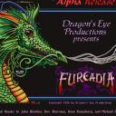

Furcadia's the world longest running MMO! It's been around since 1997 and is still up and free to play.
All you need to do is create an account on their official website!
then you can choose to play on:
✦ The downloadable client (the more stable option, but works on Windows only)
✦ The web client (has a few issues and the UI doesn't look 100% as good as on the client, but will work everywhere, even on mobile! And there's nothing to install.)
 If you're a new or returning player, consider also joining the official Discord server! It's pretty active and helpful staff can answer your questions there too.
What is there to do?
Good question!
Furcadia is a MMO, where everyone is encouraged to find their own fun. You can socialize and make friends, find a group to roleplay with, or explore the dozens of intricate maps created by talented users. Some of them are interactive and offer minigames (think roblox, but 2D and without the gross profiting off of kids!), others serve as a pretty background for roleplay scenes.
Online spaces like Furcadia thrive when its community, even if small, is active and passionate and enjoys what the platform has to offer. Furcadia will probably never be as active as it was 10 years ago, when it counted 4000 active daily users. With its dated UI and 2d graphics it doesn't catch the eye of many.
But it can still be a great place where likeminded people can meet, have fun, and be endlessly creative - not in spite but thanks to its limitations! 2d pixel art means that even you can create assets for it, customize your UI to your liking, etc etc.
Not to mention the ability to create entire maps and populate it with custom avatars! It has a custom language you can use to code events - if ten year old me was able to code some simple events in their map, so could you!
If you have a liking for the indie web, and don't mind trading off immediacy for more customization, self expression, and in-depth interaction, a game like Furcadia might interest you!

Getting started
So you downloaded furcadia, logged on, but are completely lost. How the hell do you navigate this thing?
Let's start with the basics. Maps in this game are called Dreams! And when you boot your game, well, you start dreaming. The dream you'll spawn in at first is a dream called Challenges. It's meant to be beginner friendly and teach you the ropes, but to be honest it doesn't do the best job of it, so feeling lost is more than understandable.

The glowing, purple thing on the right is a Dream Portal! And, you guessed it, it allows you to travel to another dream. The one you see right there is a Welcome Tutorial, so bump into it to get the basics of the game!
You can move with arrow keys, mouse (hover on the area near your character and you'll see arrows pointing in the direction you'll be going), or the little arrows with numbers on the bottom left part of the UI. You can only move diagonally in Furcadia! It takes a bit to get used to, but becomes second nature eventually.
You might also see some other players hanging around at South-East (see the character circled in red, right below your character?). If they're online they'll probably greet you - they're here to help out and welcome newcomers! So feel free to say hi and ask for help, or a tour of the game. If they're there, it means they were waiting for you, and would be thrilled to show you around!
If they don't say anything, chances are, they're distracted or AFK (Away From Keyboard - not physically at the computer). If that's the case, I will teach you how to grab their attention in the next section!
Where is everyone?
Furcadia's population is for the most part from the USA, so activity levels may vary during the day.
To see how many people there are on a given map with you, just press F4. You can click on their names to "see" them, which allows you to see their description and portrait!
Be sure to hover on links in their description, sometimes people hide stuff in there! ;D
If any of them have the words whisper friendly, WF, or even just friendly, you're encouraged to talk to them. If they're at their computer, they'll probably be happy to chat!
So, how does Whispering work?
They're the private messages of the Furcadia world. If you're roleplaying, it could mean you privately whispered something to someone near you. But most of the time, people just use it to chat while in different dreams, or different parts of the same dream.

There are two ways to whisper to someone. The easiest is to right click their name, and choose Whisper from the options.
This will open up a separate chat box and you can type you message there!
Alternatively, you can type /username yourmessagehere in the regular game chat, and press enter. (For example, /Felce you stink). This will automatically open the new window, in which you will have sent your message already. Don't forget the slash before the username!
But maybe, there aren't many players at all in your current dream. Let's find more!

If you navigate to the B tab of your UI (in the bottom left of the window), that's the Navigation tab. Each of those buttons will take you to a main map.
- BACK takes you to your previous map. (shortcut: CTRL+B)
- WHO shows you the users active on this map. (F4)
-
JOIN will type a command (
/join) in your chat. Type the name of a person you'd like to join (/join furrename) and press enter. This will send them a request, and if they accept, you'll be teleported to whatever dream they are in. -
SUMMON does the same thing but in reverse: request someone to join you and teleport them here! (
/summon furrename) - CENTER BUTTON the flower at the center is Furcadia's symbol, the Vinca. It'll bring you to a map of the same name, where you'll be able to access other main maps by bumping into their portal. However, the most important main maps are on these buttons as well. (shortcut: CTRL+S)
- N Button (top) is Naia Green, the community center. The map is gorgeous and there's often friendly people hanging around! Especially near the fire in South-West.
- A Button (right) is Allegria Islant (usually shortened to AI). It's the main hub for user-created dreams! You can Press F3 to be teleported around to see different parts of it. This works in many main maps, but is especially useful in AI, to discover new maps. (shortcut: CTRL+A)
- I Button (top-left) is Imaginarium. Dreams here are more roleplay-oriented, usually medievalish or sci-fi, often with a slightly more adult tone. Feral roleplays are found in AI instead.
-
FurN Button (bottom-left) is Furrabian Nights, or simply just "furn". While all of the other dreams have been T+, this is the main hub for 18+ user-created content. It's also the most populated map.
Needless to say, steer clear if you're a minor! The game will give you plenty warnings before entering.
DreamNova
It's up to you to explore and find a dream you like, and a community to populate it. Still, another way to find out where most people are is this really neat site called DreamNova. Basically, a bot will "dreamhop" (jump from dream to dream) and count how many players there are in any given dream, so you know roughly what dreams are the most populated. Links to dreams included inside. Give it a go!